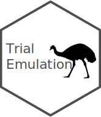

Changelog
Source:NEWS.md
TrialEmulation 0.0.4.5
- Update tests for duckdb 1.3.0 changes to sampling.
- Require R >= 4.1 for native pipe support.
TrialEmulation 0.0.4.0
CRAN release: 2024-11-29
- Add new extensible S4 class based interface.
- Step-by-step functions to construct sequence of target trial analysis. See the “New Interface”” vignette.
- Possibility to add alternative data storage and model fitting functionality. See the “Extending TrialEmulation” vignette.
- Use
duckdbto store expanded data for efficient reading and sampling of large data. - Use
parsnipmodels for weight model fitting (experimental, not recommended). - This interface is still “experimental” and may change in future
- Thanks @darkgoldenrod-cherry
TrialEmulation 0.0.3.9
CRAN release: 2024-09-09
Improved documentation
Add
estimand_typeargumentFix partial matching in data.table calls. Thanks @joshhwuu
Additional internal refactoring
TrialEmulation 0.0.2.x
Further feature development and code improvement
Implemented case-control sampling
Implemented
predict()methodPackage tests and CI pipeline on github